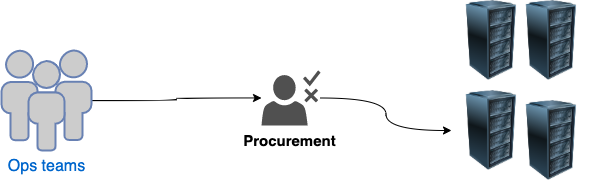
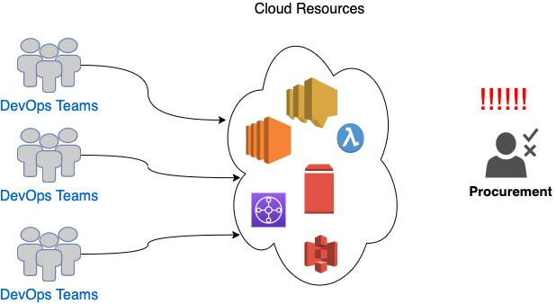
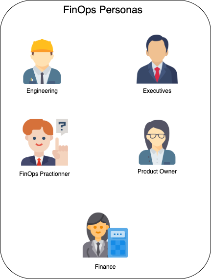
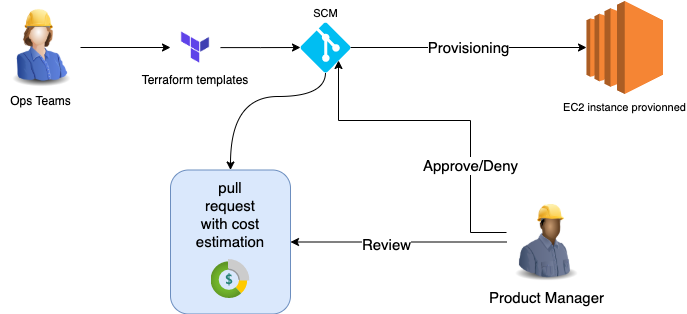
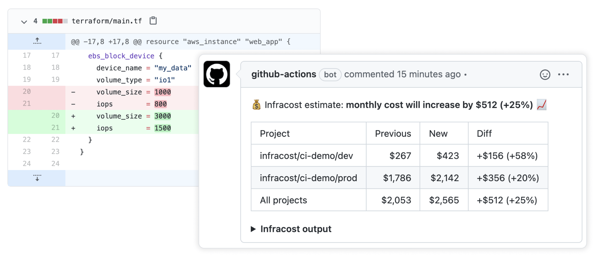

The old vs the new model of infrastructure finance
The old procurement model :
In the old days of infrastructure, ops teams like any other organization would have to follow a traditional procurement model, requirements for hardware are set months or years in advance, and needed to account for growth, the process was long, subject to multiple budget approvals and delays, OPex and CAPex finances have to determined and also approved.

The new cloud model
In the era of cloud, operation teams have more direct access to cloud resources, and cloud spending, without having to undergo a budget approval process, with this new flexibility in provisioning, the challenge becomes how to have a good governance model around cloud spending without been a road block for development and operation teams, but at the same time making sure the finance teams have a realtime visibility into the cloud bill cloud bill

what is finops :
FinOps is a culture and practice of financial awareness and transparency around cloud spending. Teams should use tools to understand their spend, forecast future spend, and take action to manage that spend as needed. FinOps is about using data to drive better decisions. It’s about efficiently using resources for the best return on investment. FinOps is about understanding how your organization is using cloud resources, and using that information to make strategic decisions about how to use your cloud spend more effectively.
FinOps Personas
different people or personas are involved in the finops teams, each has different role to accomplish, but it all centered around cloud, provisioning,
FinOps Practitioner : Drive best practices into the organization through education, standardization, and cheerleading
Execs : Leverage technology to give the business a market and competitive advantage
Product Owner : Quickly bring new products and features to market with an accurate price point
Finance : Accurately budget, forecast and report cloud costs
Engineering : Deliver faster and high quality services to the organisation, whilst maintaining business as usual

The Prius Effect
J.R. Storment and Mike Fuller in their book Cloud FinOps talk about the Prius Effect ; it’s basically an analogy to driving the hybrid EV, when you put your foot and the pedal your can instantly see the flow of energy from the battery to the engine, when you lift your foot the flow goes the other way, and the feedback is instantaneous .
The real-time reporting on cloud spends should follow the same model, providing transparency to everyone to see the effect of cloud provisioning, this is a capability that needs to be built and offered internally, making use of all the cloud billing resources, cost estimators, etc …
Unit Economics
Unit economics is the idea that cloud spend should be measured against a business metrics, it can be the number of order delivered per day, the cost of keeping a number of DAU ( daily active users), revenue per ride for a ride sharing company, etc
This approach will change the narrative of cloud spends, from just reducing the cloud bill, to correlating that amount with a business goal, this help organizations distinguish between good cloud spend and bad.
Shifting left cloud finances with engineering and operation teams :
Just like Devops and DevSecOps allowed us to shift left application delivery and application security, by getting developers and operations teams to work closely to release faster, and embed application security practices in the pipelines, FinOps aims also to eliminate the friction between ops teams and financial team, one aspect of of this collaboration can be done at the code level:
Imagine you have an operation team, wanting to provision additional EC2 instances, the ops team writes a terraform template, and sends a pull request to your code repository

your code request can generate a report showing the forecasted expenses for such a change, tools like infracost , can allow you to create a report on the impact of the current infrastructure and the future one, in a way that will help with the decision making process, this , product managers can take a look at the report and decide to approve or deny the pull request.

This step while its scope is only limited to the engineering teams, it helps create more transparency about cloud expenses, and also have operation teams take better ownership of their cloud bill.
My Thoughts :
FinOps will have to become a culture to adopt by every organization using cloud resources, driven by transparency and ownership of cloud expenses, but also managing cloud investments, at the end of the day FinOps is not only about saving money it’s also about making money, when more resources are needed for new projects.
there is a lot of talks, blogs, webinars, about cloud cost optimization but often times it’s only targeted at engineering and operation teams, using very specific technical nomenclature making almost impossible for non-technical stakeholders to understand it.
J.R Storment and Mike Fuller recommend having an actual FinOps team, composed of the different personas, having access to real time reporting, and an understandable language and terminology that make sense for everyone, while keeping in mind that one of the driving factors of cloud expendenture is Unit economics